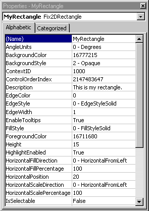
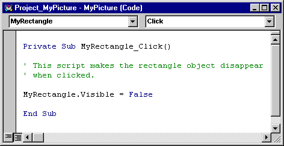
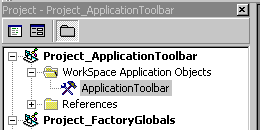

Components of the VBA editor
There are several ways to launch VBA from DeltaV Operate. You can:
Select the Visual Basic Editor command from the WorkSpace menu.
Click the Visual Basic Editor toolbar button on the Standard Toolbar.
Right-click the object that you want to write a script for and select Edit Script from the pop-up menu.
Click the Edit Script button when adding a button to a custom toolbar through the Customize Toolbar dialog box. See Working with Toolbars for more information on how to customize toolbars.
Click the VB Editor button on the Add Timer Entry and Add Event Entry dialog boxes when creating a schedule or when using the Event or Timer Experts.
After you launch VBA, the Visual Basic Editor appears. The VBE consists of several different tools and windows to help you design, create, and manage your VBA projects. The tools you will use most often are shown in the following figure.
Project Explorer
The Project Explorer is a special window in the VBE that shows each of the elements of your VBA project. The elements are presented in a tree format, with each branch displaying related information, such as forms, code modules, and elements from DeltaV Operate, such as pictures, toolbars, and global pages.
The Project Explorer makes it easy to select the project elements that you want to work with. For example, if you want to add a button to a particular form you've been working on, you can select the form from the Project Explorer. After you select a project element to edit, the VBA editor opens the appropriate tool. For example, if you select a form, the form displays on screen with the Form Toolbox available.
There are two ways to select and edit a project element that displays in the Project Explorer:
Double-click the object.
Choose the object, right-click, and then choose either View Object or View Code. Only the appropriate choice will be available. For example, View Object would not be available if you chose a code module.
The following figure shows a typical DeltaV Operate project in the VBA Project Explorer.
To view the Project Explorer, select the Project Explorer command from the View menu or press <Ctrl>+<R>.
To learn more about the Project Explorer, refer to the Help topics within the sections Visual Basic User Interface Help and Visual Basic How-To Topics of the Visual Basic for Applications Help file, or search for the Index keywords "Project Explorer".
Properties Window
The Properties window is used to review and set properties for project objects. For example, you can set the background color for a picture in the Properties window, or you can change the name of a rectangle within that picture.

To view the Properties window, select the Property Window command from the View menu, or press <F4>.
The Properties window displays the properties for the current object. When you select different objects in your VBA project, the Properties window changes to show just the properties of the object you selected. You can select the current object to work with in the Properties window by:
Selecting the object from the drop-down list at the top of the Properties window.
Selecting the object from the Project Explorer and then returning to the Properties window.
Selecting the object (or control) within a form and then returning to the Properties window.
The Properties window consists of two panes: the names of the current object's properties appear in the left pane; the values for these properties appear in the right pane. To change a property, select the property in the left pane and click and edit the value in the right pane. Some properties have a predefined list of valid values, which allows you to choose from a drop-down list. Other properties require a value of Yes or No. In this case, you can simply double-click the Value column to toggle the value between Yes and No.
To learn more about the Property Window, refer to the Help topics within the sections Visual Basic User Interface Help and Visual Basic How-To Topics of the Visual Basic for Applications Help file, or search for the Index keyword "windows".
Code Window
The Code window is where you write any code associated with your VBA project. You could write code which is executed when the user clicks a button in a picture, or it could be a part of a procedure library you've written to serve your entire project.

Two drop-down lists are located just below the title bar. One drop-down list shows all of the objects referenced in the code module, while the other drop-down list shows the procedures associated with each object.
To display the code window, do any of the following:
Right-click an object in DeltaV Operate and select Edit Script from the pop-up menu.
Double-click any code element in your application in the Project Explorer, such as modules and class modules.
Double-click anywhere on any form in your VBA project or any control on a form.
Choose View Code from the VBE window. If you want to view the code for a specific project element, such as a worksheet, be sure you select that element first in the Project Explorer.
Choose the Module command from the Insert menu, or right-click the Project Explorer and then choose Insert Module.
Once the Code window is displayed, you can enter your code directly into the window.
To learn more about the Code window, refer to the Help topics within the sections Visual Basic User Interface Help and Visual Basic How-To Topics of the Visual Basic for Applications Help file, or search for the Index keyword "code window".
Remember, a great way to learn how to use VBA with DeltaV Operate is to view the scripts behind all of the Application Toolbar buttons. To view the code behind these buttons, run the Visual Basic Editor and expand the ApplicationToolbar project in the Project Window as shown here.

Do not update these files. Doing so may cause the toolbar buttons to stop working properly.